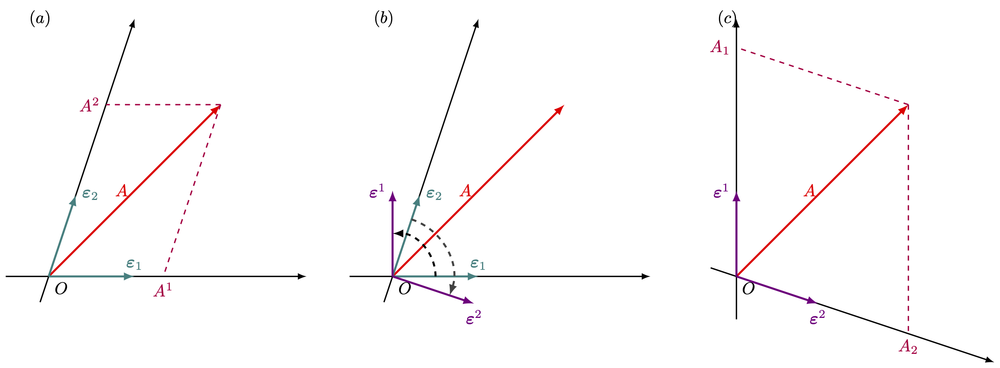

2 탠서 해석
% %
%\[ \DeclarePairedDelimiters{\set}{\{}{\}} \DeclareMathOperator*{\argmax}{argmax} \]
2.1 텐서의 기초
2.1.1 공변벡터와 반변 벡터

우리가 다루는 벡터공간에서 벡터는 기저에 대한 성분으로 표현 할 수 있다. 우선 2차원에서 생각해보자. \(\boldsymbol{\varepsilon}_1,\, \boldsymbol{\varepsilon}_2\) 기저에서 벡터 \(A\) 는
\[ A=A^1\boldsymbol{\varepsilon}_1 +A^2\boldsymbol{\varepsilon}_2 \tag{2.1}\]
로 표현 할 수 있다. \(A^1,\,A^2\) 는 반변 성분(contravariant components) 이라고 하고 \(\boldsymbol{\varepsilon}_1,\,\boldsymbol{\varepsilon}_2\) 를 공변 기저(covariant basis) 라고 한다. 공변 기저 \(\boldsymbol{\varepsilon}_1,\, \boldsymbol{\varepsilon}_2\) 에 대해 \(\boldsymbol{\varepsilon}_i \boldsymbol{\cdot \varepsilon}^j = \delta_{ij}\) 가 되도록 하는 벡터 \(\boldsymbol{\varepsilon}^1,\, \boldsymbol{\varepsilon}^2\) 찾을 수 있으며 선형 독립이고, 따라서 기저가 될 수 있다. 선형대수학에서는 이를 어떤 기저에 대한 쌍대 기저(dual basis) 라고 한다. 이 기저를 반변 기저(contravariant basis) 라 하며 이 기저에 대해
\[ A=A_1 \boldsymbol{\varepsilon}^1 + A_2 \boldsymbol{\varepsilon}^2 \tag{2.2}\]
로 표현 할 수 있다. 이 때 \(A_1,\,A_2\) 를 공변 성분(covariant components) 라고 한다. 반변 기저에 대한 공변 성분을 \((A_1 ,\, A_2)\) 와 같이 표현한 것을 공변 벡터라고 하고 공변기저에 대한 반변 성분을 \((A^1,\, A^2)\) 와 같이 표현한 것을 반변 벡터 라고 한다. 그리고 공변/반변 벡터/성분을 각각 위첨자, 아래첨자로 위와같이 구별하는 것을 아인슈타인 표기법 (Einstein notation) 이라고 한다. 즉 위첨자는 반변 벡터나 반변 성분을 의미하며 아래첨자는 공변벡터나 공변 성분을 의미한다. 그리고 여기서는 2차원에서 표현했지만 실제로는 \(n\) 차원으로 확장 할 수 있다.
2.1.2 벡터의 변환과 아인슈타인 표기법
\(\mathbb{R}^3\) 에서의 선형 변환 \(\boldsymbol{R}\) 에 의해 변위 벡터 \(\boldsymbol{x}\) 의 좌표가 \(\begin{bmatrix} x_1 & x_2 & x_3\end{bmatrix}^T\) 에서 \(\boldsymbol{x}'=\begin{bmatrix} x_1' & x_2' & x_3' \end{bmatrix}^T\) 로 변환된다고 하자. 즉 \(\boldsymbol{x}'=\boldsymbol{Rx}\) 라고 하자. 이로부터
\[ R_{ij}= \dfrac{\partial x'_i}{\partial x_j} \tag{2.3}\]
이며, 따라서
\[ x'_i = \sum_{j}R_{ij}x_j = \sum_j \dfrac{\partial x'_i}{\partial x_j}x_j \tag{2.4}\]
이다. 이제 기저의 변환을 보자. 기저 \(\boldsymbol{b}\) 가 \(\boldsymbol{b'}\) 으로 변화한다면,
\[ (\boldsymbol{b}')_j = \boldsymbol{R}^{-1}\boldsymbol{b}_j \tag{2.5}\]
이다. 기저를 \((1, 0, 0), (0, 1, 0),\, (0, 0, 1)\) 에서 \((1, 0, 0),\, (0, 2, 0),\, (0, 0, 3)\) 으로 바꾸는 변환을 생각하자. 이 변환을 나타내는 행렬 \(\boldsymbol{R}_s\) 은
\[ \boldsymbol{R}_s = \begin{bmatrix} 1 & 0 & 0 \\ 0 & 1/2 & 0 \\ 0 & 0 & 1/3\end{bmatrix} \]
이다.
벡터 \(\boldsymbol{a}\) 는 좌표 변환에 대해 좌표와 같은 형태로(식 2.4), 혹은 기저와 같은 형태로(식 2.4) 변환한다. 벡터 \(\boldsymbol{a}\) 가 좌표와 같은 형태로
\[ (a')_i = \sum_{j}\dfrac{\partial x'_i}{\partial x_j}a_j \]
와 같이 변화한다면 이런 벡터를 반변 벡터(contravariant vector) 라고 한다.
반대로 \(\mathbb{R}^3\) 에서 정의된 스칼라 함수의 그래디언트를 생각하자.
\[ \left(\nabla' \phi\right)_i := \dfrac{\partial \phi}{\partial x'_i} = \sum_j \dfrac{\partial x_j}{\partial x'_i}\dfrac{\partial \phi}{\partial x_j} \]
이 벡터는 기저와 같이 변환된다. 이런 벡터를 공변 벡터(covariant vector) 라고 한다.
데카르트 좌표계, 즉 정규직교기저를 사용하는 좌표계에서는 반변벡터와 공변벡터가 동일하지만 데카르트 좌표계가 아닌 경우는 반변벡터와 공변벡터가 다르다.
아인슈타인 표기법
반변벡터와 공변벡터를 엄격하게 다루기 위해 반변벡터는 위첨자를, 공변벡터는 아래첨자를 사용하여 아래와 같이 표기한다.
\[ \begin{aligned} (A')^i &= \sum_j \dfrac{\partial (x')^i}{\partial x^j} A^j,\qquad &&\boldsymbol{A}, \text{ a contravariant vector,}\\[0.3em] A'_i &= \sum_j \dfrac{\partial x^j}{\partial (x')^i}A_j && \boldsymbol{A}, \text{ a covariant vector.} \end{aligned} \tag{2.6}\]
또한 위첨자와와 아래첨자에 같은 인덱스가 있다면 free index 라고 하며 \(\sum\) 과 같은 표기 없이 합으로 표기한다. 즉
\[ A^iA_i := \sum_i A^iA_i \]
이다. 이것은 아인슈타인이 최초로 사용했기 때문에 아인슈타인 표기법(Einstein notation) 이라고 한다.
2.1.3 랭크 2 텐서
좌표 변환에 대해 다음과 같이 변하는 텐서를 랭크 2 탠서(tensor of rank 2) 라고 한다.
\[ \begin{aligned} (A')^{ij} &= \sum_{k, l} \dfrac{\partial (x')^i}{\partial x^k}\dfrac{\partial (x')^j}{\partial x_l}A^{kl}, \\[0.3em] (B')^i_j &= \sum_{k,l}\dfrac{\partial (x')^i}{\partial x^k}\dfrac{\partial x^l}{\partial (x')_j}B^k_l, \\[0.3em] (C')_{ij} &= \sum_{k,l}\dfrac{\partial x^k}{\partial (x')_i}\dfrac{\partial x^l}{\partial (x')_j}C_{kl}. \end{aligned} \tag{2.7}\]
\(A^{kl}\) 은 두 인덱스에 대해 반변벡터와 같은 방식으로 변환되고 \(C_{kl}\) 은 두 인덱스에 대해 공변벡터와 같은 방식으로 변환된다는 것을 알 수 있다. 이에 맞추어 \(A^{kl}\) 과 같이 변환되는 텐서를 반변텐서, \(C_{kl}\) 과 같이 변환되는 텐서를 공변텐서 라고 부른다. \(B^k_l\) 은 공변벡터와 반변벡터의 변환방식이 섞여 있으며 혼합 텐서(mixed tensor) 라고 부른다.
이렇게 번잡한 개념과 표기법을 도입하는 것은 좌표계와 무관한 물리량을 엄밀하게 사용하기 위해서이다. 실제로 텐서의 도입으로 이것이 어떻게 이루어지는지는 이후에 보기로 하자.
랭크 2 텐서는 자주 행렬로 아래와 같이 표기된다. \[ \boldsymbol{A} = \begin{bmatrix} A^{11} & A^{12} & A^{13}\\ A^{21} & A^{22} & A^{23} \\ A^{31} & A^{32} & A^{33} \end{bmatrix} \]
하지만 행렬이 모두 랭크 2 텐서는 아니다. 텐서는 식 2.7 와 같이 변환되는 양이라는 것을 다시 한번 상기하자.
식 2.3 을 첨자 표기법에 따라 표기하면 변환행렬 \(\boldsymbol{R}\) 은 다음과 같다.
\[ R_{ij}= \dfrac{\partial (x')^i}{\partial x^j}. \tag{2.8}\]
그렇다면
\[ (A')^{ij} = \sum_{k, l} R_{ik} R_{jl} A^{kl} = \sum_{k, l} R_{ik} A^{kl} (R^T)_{lj}\qquad \text{or}\qquad \boldsymbol{A}' = \boldsymbol{RAR}^T. \]
이다.
랭크 2 텐서의 연산
랭크 2 반변 텐서의 합을 다음과 같이 정하는 것은 자연스럽다.
\[ A^{ij} + B^{ij} = C^{ij} \]
단 합이 정의가 되려면 텐서가 같은 랭크여야 하며 같은 공간에서 정의되어야 하고 같은 공변성 혹은 반변성을 가져야 한다.
랭크 2 텐서의 대칭성
행렬과 같은 방법으로 대칭 텐서와 반대칭 텐서를 정의한다. 즉
\[ A^{kl} = A^{lk} \]
이면 대칭 텐서(symmetric tensor) 라고 하고,
\[ A^{kl} = - A^{lk} \]
이면 반대칭 텐서(antisymmetric tensor) 라고 한다.
또한 텐서는 다음과 같이 대칭 텐서와 반대칭 텐서의 합으로 나타 낼 수 있다.
\[ A^{kl} = \dfrac{A^{kl} + A^{lk}}{2} + \dfrac{A^{kl}- A^{kl}}{2}. \]
크로네커 \(\delta\)
좌표 변환에 대해 크로네커 델타 \(\delta_{kl}\) 는 2차 텐서이며 공변과 반변이 섞인 혼합 텐서임을 보일 수 있다. Chain rule 에 의해 (일단 지금까지의 \(\delta_{ij}\) 표기를 사용하면)
\[ \delta'_{ij} = \sum_{k,l} \dfrac{\partial (x')^i}{\partial x^k} \dfrac{\partial x^l}{\partial (x')_j} \delta_{kl} \]
임을 안다. 이제 위의 식을 제대로 쓰면, 그리고 아인슈타인 표기법에 따라 \(\sum\) 표기를 제거하면
\[ (\delta')^i_j = \dfrac{\partial (x')^i}{\partial x^k} \dfrac{\partial x^l}{\partial (x')_j} \delta^k_{l} \tag{2.9}\]
이다. 또한
\[ \delta^k_l := \dfrac{\partial x^k}{\partial x^l},\qquad (\delta')^{i}_j := \dfrac{\partial (x')^i}{\partial (x')^j} \tag{2.10}\]
로 정의 할 수 있다. 크로네커 델타는 좌표 변환에 대해서도 그 성분이 변하지 않는 등방 텐서(isotropic tensor) 이다.
2.1.4 텐서 연산
축약
다음을 보자.
\[ (B')^{i}_i = \dfrac{\partial (x')^i}{\partial x^k}\dfrac{\partial x^l}{\partial (x')^i} B^k_{l}= \dfrac{\partial x^l}{\partial x^k}B_l^k = \delta^l_k B_{l}^k = B_{k}^k \]
혼합 텐서의 경우 chain rule 로 인해 식을 위와 같이 간단하게 줄일 수 있다. 이것을 축약(contraction) 이라고 한다.
텐서곱
텐서의 랭크가 어떻든, 공변성(즉 위첨자, 아래첨자)이 어떻든 간에 두 텐서의 성분을 곱하여 새로운 텐서를 만들 수 있다. 이 때 원래 있던 두 텐서의 위첨자, 아래첨자는 그대로 유지된다. 예를 들어
\[ A^i_k B^j_{lm} = C^{ij}_{klm},\qquad A^j B^{i}_{lk} = F^{ij}_{lk} \]
와 같은 방식이다. 위의 식에서 왼쪽 식에 대한 좌표변환을 보면
\[ \begin{aligned} (F')^{ij}_{lk} &= \dfrac{\partial (x')^i}{\partial x^p}\dfrac{\partial (x')^j}{\partial x^q}\dfrac{\partial x^s}{\partial (x')^l}\dfrac{\partial x^s}{\partial (x')^k}A^q B^{p}_{st} \\[0.3em] &= \left[\dfrac{\partial (x')^j}{\partial x^q} A^p \right]\left[\dfrac{\partial (x')^i}{\partial x^p}\dfrac{\partial x^s}{\partial (x')^l}\dfrac{\partial x^s}{\partial (x')^k} B^{p}_{st}\right]\\[0.3em] &= (A')^j (B')^{i}_{lk} \end{aligned} \]
이다.
역변환
\[ (A')^j = \dfrac{\partial (x')^j}{\partial x_i}A^i \]
이다. 또한 그 역변환은
\[ A^i = \dfrac{\partial x^i}{\partial (x')^j} (A')^j \]
이다. 여기서 당연히
\[ \left[\dfrac{\partial (x')^j}{\partial x_i}\right]^{-1} \ne \dfrac{\partial x^i}{\partial (x')^j} \]
이 아니며, 등호가 성립하는 것은 데카르트 좌표계에서 뿐이다.
몫 규칙
정해진 벡터 \(A_j\), \(B_i\) 에 대해
\[ K^{j}_i A_j = B_i \tag{2.11}\]
를 만족하는 \(K_i^j\) 를 구한다고 하자. \(K^j_i\) 가 rank 2 혼합 텐서로 표기되어 있지만 아직까지는 위의 식이 좌표와 무관하게 성립한다는 것 이외의 성질은 모른다고 하자. 우리는 여기서 \(K_i^j\) 가 혼합 텐서가 되는 것을 보일 것이다. 이 방정식이 좌표변환에 대해 불변이므로
\[ (K')^{j}_i (A')_j = (B')_i \tag{2.12}\]
역시 만족해야 한다. \(B\) 가 공변 벡터이므로
\[ (B')_i = \dfrac{\partial x^m}{\partial x^i} B_m =\dfrac{\partial x^m}{\partial x^i} K^j_m A_j = \dfrac{\partial x^m}{\partial x^i}K^j_m \dfrac{\partial (x')^n}{\partial x^j}(A')_n \tag{2.13}\]
이다. 이 식을 식 2.12 와 같이 쓰기 위해 마지막 식의 인덱스 가운데 \(n\) 과 \(j\) 를 교환하자.
\[ (B')_i = \dfrac{\partial x^m}{\partial x^i}K^n_m \dfrac{\partial (x')^j}{\partial x^n}(A')_j. \tag{2.14}\]
위 식과 식 2.12 를 생각하면
\[ \left[(K')^j_i - \dfrac{\partial x^m}{\partial x^i}\dfrac{\partial (x')^j}{\partial x^n} K^n_m\right](A')_j = 0 \tag{2.15}\]
임의의 \(A'\) 에 대해 성립해야 하므로
\[ (K')^j_i = \dfrac{\partial x^m}{\partial x^i}\dfrac{\partial (x')^j}{\partial x^n} K^n_m \]
이다. 즉 우리는 \(K\) 에 대해 아무 것도 모른 채로 식 2.12 가 좌표변환에 무관하게 성립한다는 가정만으로 \(K\) 가 rank 2 혼합 텐서가 될 수 밖에 없다는 것을 보였다. 이것은 일반적인 텐서 방정식에 대해 모두 성립하며 예를 들어
\[ KA_{ij}=B_{kl} \]
를 만족하는 \(K\) 는 \(K^{ij}_{kl}\) 의 변환을 따르는 4차 텐서 일 수 밖에 없다.
2.1.5 스피너
양자역학 이전까지 스칼라, 벡터 와 랭크 \(n\) 텐서로 물리량을 모두 기술 할 수 있다고 생각했다. 그러나 특히 반정수 스핀 입자의 발견으로 이것이 불가능하다는 것을 알게 되었다. 스핀 \(0\) 입자는 스칼라로, 스핀 \(1\) 입자는 벡터로 기술 할 수 있지만 전자, 양성자, 중성자와 같은 스핀 \(1/2\) 입자는 좌표 변환에 대해 지금까지 알아온 방법으로는 기술 할 수 없었다. 스피너에 대해서는 이후 군론에서 다루기로 하자.
연습문제
연습문제 2.1 (Arfken 4.1.1) 어떤 텐서가 어떤 좌표계에서 모든 성분이 \(0\) 이라면 이 텐서는 모든 좌표계에서 \(0\) 임을 보여라.
(해답). \[ (A')^{ijk..}_{lmn...} = \dfrac{\partial (x')^i}{\partial x^{i'}} \cdots \dfrac{\partial x^{l'}}{\partial (x')^l}\cdots A^{i'j'k'}_{l'm'n'} = 0 \]
연습문제 2.2 (Arfken 4.1.2) 두 텐서 \(A_{ij}\), \(B_{kl}\) 이 어떤 좌표계에서(위첨자 \(0\) 으로 표시한다)
\[ A^0_{ij} = B^0_{ij} \]
라면 이 두 텐서는 동일함을 보여라.
(해답). \[ A_{ij}= \dfrac{\partial x^k}{\partial (x^0)^i}\dfrac{\partial x^l}{\partial (x^0)^j}A^0_{kl} = \dfrac{\partial x^k}{\partial (x^0)^i}\dfrac{\partial x^l}{\partial (x^0)^j}B^0_{kl} = B_{ij} \]
연습문제 2.3 (Arfken 4.1.3) (문제가 이상하다..)
4 차원 벡터 가 두 관성계에서 마지막 세 성분이 \(0\) 이 된다. 이중 두번째 관성계는 첫번째 관성계에서 \(x_0\) 축을 중심으로 한 회전이 아니라고 하자. 즉 최소한 하나의 \(\partial (x')^i/\partial x^0,\, (i=1,\,2,\,3)\) 는 \(0\) 이 아니다. 이 때 \(0\) 번째 성분은 모든 좌표계에서 \(0\) 임을 보여라.
(해답). 4차원 벡터 \(\boldsymbol{A}\) 가 첫번째 좌표계에서 \((A^0,\, A^1,\,A^2,\,A^3)\) 이며 두번째 좌표계에서 \((A'^0,\,A'^1,\,A'^2,\,A'^3)\) 이고 \(A^1=A^2=A^3=A'^1=A'^2=A'^3=0\) 이다. \((A')^0\) 에 대해
\[ (A')^0 = \dfrac{\partial (x')^0}{\partial x^\alpha}A^{\alpha} = \dfrac{\partial (x')^0}{\partial x^0}A^{0} \]
이다. \(\partial (x')^i/\partial x^0 \ne 0\) 인 \(i\) 에 대해
\[
0 = (A')^i = \dfrac{\partial x'^i}{\partial x^\alpha}A^\alpha = \dfrac{\partial x'^i}{\partial x^0}A^0
\]
이므로 \(A^0=0\) 이며 따라서 \(A'^0 = 0\) 이다.
연습문제 2.4 (Arfken 4.1.4) 좌표축에 대한 \(90^\circ\), \(180^\circ\) 회전을 생각하여 3차원 공간에서의 rank 2 텐서 가운데 등방 텐서인 것은 \(\delta^i_j\) 의 스칼라 곱 밖에 없음을 보여라.
(해답). .. to be done..
연습문제 2.5 (Arfken 4.1.5) 일반상대성 이론에서 사용되는 4 차원 랭크 4 텐서 리만-크리스토펠 곡률 텐서 \(R_{iklm}\) 은 다음과 같은 대칭 관계를 만족한다.
\[ R_{iklm} = - R_{ikml} = - R_{kilm} \tag{2.16}\]
\(0\) 부터 \(3\) 까지의 인덱스를 사용하여 전체 256 성분중에 독립적인 성분이 36 개임을 보이고 또한
\[ R_{iklm} = R_{lmik} \tag{2.17}\]
를 사용하면 독립적인 생분의 갯수를 21 개 로 줄일 수 있음을 보여라. 마지막으로 성분이
\[ R_{iklm} + R_{ilmk} + R_{imkl} = 0 \tag{2.18}\]
을 만족한다면 독립적인 성분의 갯수는 20개로 줄게 됨을 보여라. 단 마지막 식은 사용된 4개의 인덱스가 모두 다를 경우에만 성립한다.
(해답). 4 차원 rank 4 텐서이므로 \(4^4=256\) 개의 성분을 가진다.
(\(1\)) 식 2.16 : 첫번째 인덱스는 두번째 인덱스와 달라야 하며, 세번째 인덱스는 네번째 인덱스와 달라야 한다. 또한 반대칭 성질이 있으므로 첫 두개의 인덱스 에서 6가지 경우, 마지막 두 인덱스의 6가지 경우, 총 36가지의 독립적인 성분이 존재한다. \(R_{iklm}\) 에서 \(i<k\), \(l<m\) 인 경우.
(\(2\)) 식 2.17 : 36 가지중 첫 두 인덱스와 마지막 두 인덱스가 같은 경우는 6가지 이며 이것을 제외한 30개에 대해 대칭성이 존재하므로 30/2+6=21 개의 독립적인 성분이 존재한다.
(\(3\)) 식 2.18 : 4개의 인덱스가 모두 다른 경우에 하나의 제한조건이 포함되므로 하나의 독립 변수를 줄인다. 따라서 총 20개의 독립 성분이존재한다.
연습문제 2.6 (Arfken 4.1.6) 3차원 반대칭 랭크 4 텐서 \(T_{iklm}\) 는 몇개의 독립적인 성분을 가지는가?
(해답). \(i,\,k,\,l,\,m\) 가운데 최소한 2개는 같으므로 성분이 모두 \(0\) 이다.
연습문제 2.7 (Arfken 4.1.7) \(T_{...i}\) 는 랭크 \(n\) 텐서이다. \(\partial T_{...i}/\partial x^j\) 는 랭크 \(n+1\) 텐서 임을 보여라.
(해답). \[ T'_{...k} = [n \text{ 개의 좌표 편미분의 곱}] T'_{...i} \] 이므로
\[ \dfrac{\partial T'_{...i}}{\partial x'^j} = \dfrac{\partial x_k}{\partial x'^j}[n \text{ 개의 좌표 편미분의 곱}]\dfrac{\partial T_{...i} }{\partial x_k} \]
이다. 따라서 랭크 \(n+1\) 텐서이다.
연습문제 2.8 (Arfken 4.1.8) \(T_{ijk...}\) 는 랭크 \(n\) 텐서이다. \(\sum_j \partial T_{ijk...}/\partial x^j\) 는 랭크 \(n-1\) 텐서 임을 보여라.
(해답). contraction 에 의해 랭크 \(n-1\) 텐서가 된다.
연습문제 2.9 (Arfken 4.1.9) 이중 합 \(K_{ij}A^iB^j\) 가 어떤 벡터 \(A^i,\,B^j\) 에 대해서도 불변이라면 \(K_{ij}\) 가 랭크 2 텐서 임을 보여라.
(해답). 몫 규칙에 의해 자명하지만 일단 연습삼아… \[ K_{ij}A^iB^j = K'_{lm}A'^lB'^m = K'_{lm}\left[\dfrac{\partial x'^l}{\partial x^i}A^i\right] \left[\dfrac{\partial x'^m}{\partial x^j}B^j\right] \]
이므로
\[ \left[K_{ij} -\dfrac{\partial x'^l}{\partial x^i} \dfrac{\partial x'^m}{\partial x^j}K'_{lm} \right] A^iB^j=0 \]
이다. 임의의 \(A^iB^j\) 에 대해 성립해야 하므로 \([\cdots ]=0\) 이어야 한다. 따라서 \(K_{ij}\) 는 랭크 2 텐서이다.
2.2 Pseudotensor 와 Dual Tensor
2.2.1 Pseudovector 와 pseudotensor
지금까지 우리는 좌표의 회전에 대해서만 양의 변화를 보았다. 이제 반사(reflection) 이나 반전(inversion) 과 같은 변화를 살펴보자(이를 improper rotation 이라고 한다)
벡터 \(A\) 는 회전, 혹은 그 행렬식이 \(1\) 인 변환 \(R\) 에 대해 \(A'=RA\) 와 같이 변환된다. 반전과 같이 행렬식이 \(-1\) 인 변환 \(R^-\) 에 대해서는 상황이 다르다. 반전(Inversion) 을 생각하자. 위치나 속도와 같은 벡터들은 반전에 대해 \(A'=R^- A\) 와 같이 변환된다. 그러나 각운동량, 토크, 각속도와 같은 벡터 물리량은 \(A'=\det (R^-) R^- A\) 와 같이 변환된다. 이렇게 좌표와 다른 방식의 대칭성을 가지고 변화하는 벡터를 pseudovectors(의사 벡터, 혹은 axial vectors) 라고 한다.
이런 pseudovector 의 개념은 임의의 rank 를 가진 텐서로 확장 될 수 있다. 어떤 직교 변환 \(R\) 에 대해 일반적인 텐서 변환식에 \(\det(R)\) 을 곱한 것으로 변화하는 텐서를 pseudotensor 라고 한다.
예제 2.1 (레비-시비타(Levi-Civita) 기호) 인덱스가 3개인 레비-시비타 기호 \(\varepsilon_{ijk}\) 의 정의는 다음과 같다.
\[ \begin{aligned} \varepsilon_{123}=\varepsilon_{231}=\varepsilon_{312} &= +1, \\ \varepsilon_{132} = \varepsilon_{213} = \varepsilon_{321} &= -1,\\ \text{모든 다른 }\varepsilon_{ijk}&= 0. \end{aligned} \tag{2.19}\]
\(3\times 3\) 행렬 \(A\) 에 대해 \[ \sum_{i,j,k}\varepsilon_{ijk} A_{1i}A_{2j}A_{3k} = \det (A) \]
임을 알 수 있다.
랭크 3 pseudotensor \(\eta_{ijk}\) 가 어떤 데카르트 좌표계에서 \(\varepsilon_{ijk}\) 와 같다고 하자. 그리고 \(S\) 를 \(\mathbb{R}^3\) 에서의 어떤 직교변환 행렬이라고 하자. Pseudotensor 의 정의에 의해
\[ \eta'_{ijk} = \det(S) \sum_{p,q,r} a_{ip}a_{jq}a_{kr} \varepsilon_{pqr} \]
이다. 행렬식을 생각하면
\[ \eta'_{ijk} = \left(\det{S}\right)^2 \varepsilon_{ijk} \]
임을 알 수 있다. 직교변환 행렬 \(S\) 에 대해 \(\det (S)= \pm 1\) 이므로 \(\eta'_{ijk}= \varepsilon_{ijk}\) 이다.
이로부터 우리는 \(\varepsilon_{ijk}\) 가 rank 3 pseudotensor 이며 isotropic 함을 알 수 있다. 즉 회전 변환에 대해 불변이며, improper rotation 에 대해 서는 \(-1\) 을 곱한 것과 같다.
2.2.2 쌍대 텐서
3차원 공간에서의 임의의 2차 반대칭 텐서 \(C\) 는 다음과 같이 표현 할 수 있다.
\[ C=\begin{bmatrix} 0 & C^{12}& -C^{31} \\ - C^{12} & 0 & C^{23} \\ C^{31} & -C^{23} & 0\end{bmatrix} \]
\(C\) 에 대해 아래와 같은 벡터 \(\overline{C}\) 를 \(C\) 에 대한 쌍대 텐서(dual tensor) 라고 한다.
\[ \overline{C} := (C_1,\,C_2,\,C_3) = (C^{23},\, C^{31},\, C^{12}). \]
즉
\[ \overline{C}_i = \dfrac{1}{2} \varepsilon_{ijk} C^{jk} \]
이다.
연습문제
연습문제 2.10 (Arfken 4.2.2) 반대칭 랭크 2 텐서와 벡터와의 1-1 대응은 3차원 공간에서만 가능하다는 것을 보여라.
(해답). \(n\) 차원 공간에서의 반대칭 랭크 \(2\) 텐서 \(A\) 의 독립적인 성분의 갯수는 \(\dfrac{n^2-n}{2}\) 이며 \(n\) 차원 공간의 벡터의 성분의 갯수는 \(n\) 개이므로 1-1 대응이 성립하려면
\[ \dfrac{n^2-n}{2}=n \]
이어야 한다. 즉 \(n=3\) 뿐이다. (\(n=0\) 은 무의미하다.)
연습문제 2.11 (Arfken 4.2.3) \(\nabla \boldsymbol{\cdot}\nabla \times \boldsymbol{A}\) 와 \(\nabla \times \nabla \phi\) 를 \(\mathbb{R}^3\) 에서의 텐서 표기법으로 쓰고 각각 \(0\) 임을 보여라.
(해답). \[ \begin{aligned} \nabla \boldsymbol{\cdot}\nabla \times \boldsymbol{A} &= \varepsilon_{ijk}\dfrac{\partial }{\partial x^i}\dfrac{\partial A_k}{\partial x^j} = 0 \\[0.3em] \left(\nabla \times \nabla \phi\right)_k &= \epsilon_{ijk}\dfrac{\partial^2 \phi}{\partial x^i\partial x^j}=0 \end{aligned} \]
연습문제 2.12 (Arfken 4.2.4) 아래의 랭크 4 텐서는 등방임을 보여라. 즉 좌표의 회전에 독립적인 값이다.
(\(a\)) \(A^{ik}_{jl} = \delta^i_j \delta^k_l\),
(\(b\)) \(B^{ij}_{kl} = \delta^{i}_k \delta^j_l + \delta^i_l \delta^j_k\),
(\(c\)) \(C^{ij}_{kl} = \delta^{i}_k \delta^j_l - \delta^i_l \delta^j_k\).
(해답). (\(a\))
\[ \begin{aligned} A'^{pq}_{rs} &= \dfrac{\partial x'^p}{\partial x_i}\dfrac{\partial x'^q}{\partial x^k}\dfrac{\partial x^j}{\partial x'^r}\dfrac{\partial x^l}{\partial x'^s}A^{ik}_{jl} = \dfrac{\partial x'^p}{\partial x_i}\dfrac{\partial x'^q}{\partial x^k}\dfrac{\partial x^j}{\partial x'^r}\dfrac{\partial x^l}{\partial x'^s} \delta^i_j \delta^k_l \\[0.3em] &= \dfrac{\partial x'^p}{\partial x_i}\dfrac{\partial x'^q}{\partial x^k}\dfrac{\partial x^i}{\partial x'^r}\dfrac{\partial x^k}{\partial x'^s} = \dfrac{\partial x'^p}{\partial x'^r}\dfrac{\partial x'^q}{\partial x'^s} = \delta^p_r \delta^q_s = A^{pq}_{rs} \end{aligned} \]
(\(b\)) \[ \begin{aligned} B'^{pq}_{rs} &= \dfrac{\partial x'^p}{\partial x^i}\dfrac{\partial x'^q}{\partial x^j}\dfrac{\partial x^k}{\partial x'^r}\dfrac{\partial x^l}{\partial x'^s}B^{ij}_{kl} = \dfrac{\partial x'^p}{\partial x^i}\dfrac{\partial x'^q}{\partial x^j}\dfrac{\partial x^k}{\partial x'^r}\dfrac{\partial x^l}{\partial x'^s}\left( \delta^{i}_k \delta^j_l + \delta^i_l \delta^j_k\right) \\[0.3em] &= \dfrac{\partial x'^p}{\partial x^i}\dfrac{\partial x'^q}{\partial x^j}\dfrac{\partial x^i}{\partial x'^r}\dfrac{\partial x^j}{\partial x'^s} + \dfrac{\partial x'^p}{\partial x^i}\dfrac{\partial x'^q}{\partial x^j}\dfrac{\partial x^j}{\partial x'^r}\dfrac{\partial x^i}{\partial x'^s} \\[0.3em] &= \delta^p_q \delta^q_s + \delta^p_s \delta^q_r = B^{pq}_{rs} \end{aligned} \]
(\(c\)) (\(b\)) 로부터 \(C'^{pq}_{rs} = \delta^{p}_r \delta^q_s - \delta^p_s \delta^q_r=C^{pq}_{rs}\).
연습문제 2.13 (Arfken 4.2.5) 두개의 인덱스를 가진 레비-시비타 기호 \(\varepsilon_{ij}\) 는 2차원에서 랭크 2 슈도텐서임을 보여라. 이것은 연습문제 2.4 에서 보인 \(\delta^i_j\) 의 유일성에 위배되는가?
(해답). 예제 2.1 의 2차원 버젼이다. \(\delta^{i}_j\) 는 3차원서 등방 텐서이며 \(\epsilon_{ij}\) 는 2차원에서 등방 텐서이다.
연습문제 2.14 (Arfken 4.2.7) 반대칭 2차 텐서 \(B^{ij}\) 에 대해 \(A_k = \dfrac{1}{2}\varepsilon_{ijk}B^{ij}\) 라고 하자. 다음이 성립함을 보여라.
\[ B^{mn} = \varepsilon^{mnk}A_k. \]
(해답). \(\varepsilon^{mnk}\varepsilon_{ijk} =\delta^m_i \delta^n_j - \delta^m_j\delta^n_i\) 임을 이용한다. \[ \begin{aligned} \varepsilon^{mnk}A_k = \dfrac{1}{2}\varepsilon^{mnk}\varepsilon_{ijk}B^{ij} = \dfrac{1}{2}(\delta^m_i \delta^n_j - \delta^m_j\delta^n_i)B^{ij} =\dfrac{1}{2} (B^{mn} -B^{nm}) = B^{mn} \end{aligned} \]
2.3 일반화된 좌표계에서의 텐서
2.3.1 메트릭 텐서
이제 일반적인 거리 공간(metric space) 에서 생각하자. 일단은 3차원 공간에 한정한다. 일반화된 좌표를 \(q^i\) 라고 표기하기로 하자. 공변 기저 벡터(covariant basis vector) \(\boldsymbol{\varepsilon}_i\) 를 다음과 같이 정의한다.
\[ \boldsymbol{\varepsilon}_i := \dfrac{\partial x}{\partial q^i} \hat{\boldsymbol{e}}_x + \dfrac{\partial y}{\partial q^i}\hat{\boldsymbol{e}}_y + \dfrac{\partial z}{\partial q^i}\hat{\boldsymbol{e}}_z \tag{2.20}\]
3차원 공간에서는 \(\boldsymbol{\varepsilon}_1,\,\boldsymbol{\varepsilon}_2, \, \boldsymbol{\varepsilon}_3\) 로 기저를 구성 할 수 있다. 이 세 벡터는 서로 단위 벡터가 아닐 수도 있으며, 서로 직교하지 않을 수도 있다. 이제 임의의 벡터 \(\boldsymbol{A}\) 는 공변 기저 벡터에 대해 다음과 같이 쓸 수 있다.
\[ \boldsymbol{A} := A^1 \boldsymbol{\varepsilon}_1 + A^2 \boldsymbol{\varepsilon}_2 + A^3 \boldsymbol{\varepsilon}_3. \tag{2.21}\]
여기서 주의해야 할 것인 벡터 \(\boldsymbol{A}\) 는 좌표 변환에 대해 고정되어 있으며 변하는 것은 기저와 좌표값 \(A^1,\,A^2,\,A^3\) 라는 것, 그리고 기저와 좌표값은 서로 반대 방향으로 변환된다는 것이다. 또한 공변 기저 벡터는 위치에 따라 달라진다는 것이다. 이제 미소 변위 \((ds)^2\) 를 생각하면
\[ (ds)^2 = \sum_{i, j} (\boldsymbol{\varepsilon}_i dq^i) \boldsymbol{\cdot} (\boldsymbol{\varepsilon}_j dq^j) = \left(\boldsymbol{\varepsilon}_i \boldsymbol{\cdot \varepsilon}_j \right) dq^i dq^j \]
와 같이 쓸 수 있다. 공변 메트릭 텐서(covariant metric tensor) \(g_{ij}\) 를 아래와 같이 정의한다.
\[ g_{ij}:= \left(\boldsymbol{\varepsilon}_i \boldsymbol{\cdot \varepsilon}_j \right) . \tag{2.22}\]
그렇다면
\[ (ds)^2 = g_{ij}dq^i dq^j \tag{2.23}\]
이다. \((ds)^2\) 은 회전 및 반사에 대해 불변이며 몫 규칙에 다라 \(g_{ij}\) 는 공변 랭크 2 텐서이다. 또한 식 2.22 로부터 \(g_{ij}\) 가 대칭 텐서라는 것을 알 수 있다.
공변 메트릭 텐서 \(g_{ij}\) 에 대해 반변 메트릭 텐서 \(g^{ij}\) 가
\[ g^{ik}g_{kj}= g_{jk}g^{ki} = \delta^i_j \tag{2.24}\]
가 되도록 정한다. 또한 메트릭 텐서는 공변벡터와 반변벡터간의 변환을 위해 사용 될 수 있다. 즉
\[ g_{ij}F^j = F_i, \qquad \text{and}\qquad g^{ij}F_j = F^i \tag{2.25}\]
이제 식 2.21 과 식 2.25 로부터 다음을 알 수 있다.
\[ \boldsymbol{A} = A^i\boldsymbol{\varepsilon}_i = A^i \delta^{k}_i \boldsymbol{\varepsilon}_k = \left(A^i g_{ij}\right)\left(g^{jk} \boldsymbol{\varepsilon}_k\right) = A_j \boldsymbol{\varepsilon}^j \tag{2.26}\]
즉 벡터는 반변기저에 대해 공변 성분으로, 혹은 공변 기저에 대해 반변 성분으로 표현 할 수 있다.
2.3.2 공변기저와 반변기저
공변 기저 벡터 \(\boldsymbol{\varepsilon}_i\) (식 2.20) 에 대해 반변 기저 벡터는 다음과 같이 정의된다.
\[ \boldsymbol{\varepsilon}^i :=\dfrac{\partial q^i}{\partial x}\hat{\boldsymbol{e}}_x + \dfrac{\partial q^i}{\partial y}\hat{\boldsymbol{e}}_y + \dfrac{\partial q^i}{\partial z}\hat{\boldsymbol{e}}_z. \tag{2.27}\]
그렇다면
\[ \boldsymbol{\varepsilon}^i \boldsymbol{\cdot \varepsilon}_j = \dfrac{\partial q^i}{\partial x}\dfrac{\partial x}{\partial q^j} + \dfrac{\partial q^i}{\partial y}\dfrac{\partial y}{\partial q^j} + \dfrac{\partial q^i}{\partial z}\dfrac{\partial z}{\partial q^j} = \dfrac{\partial q^i}{\partial q^j} = \delta^i_j \tag{2.28}\]
이다. 또한 다음이 성립함을 보일 수 있다.(연습문제 2.17)
\[ (\boldsymbol{\varepsilon}^i\boldsymbol{\cdot \varepsilon}^j)(\boldsymbol{\varepsilon}_j\boldsymbol{\cdot \varepsilon}_k) = \delta^i_k \tag{2.29}\]
식 2.22, 식 2.24 와 위 식으로부터 반변 메트릭 텐서를 알 수 있다.
\[ g^{ij} = \boldsymbol{\varepsilon}^i\boldsymbol{\cdot \varepsilon}^j. \tag{2.30}\]
예제 2.2 (구면좌표계에서의 메트릭 텐서)
\((r,\,\theta,\, \varphi)\) 로 기술되는 원통좌표계를 생각하자. 식 2.20 로부터
\[ \begin{aligned} \boldsymbol{\varepsilon}_r &= \sin \theta \cos \varphi \hat{\boldsymbol{e}}_x + \sin \theta \sin \varphi \hat{\boldsymbol{e}}_y + \cos\theta \hat{\boldsymbol{e}}_z, \\[0.3em] \boldsymbol{\varepsilon}_\theta &= r \cos \theta \cos \varphi \hat{\boldsymbol{e}}_x + r \cos \theta \sin \varphi \hat{\boldsymbol{e}}_y - r \sin \theta \hat{\boldsymbol{e}}_z, \\[0.3em] \boldsymbol{\varepsilon}_\varphi &= - r\sin \theta \sin \varphi \hat{\boldsymbol{e}}_x + r \sin \theta \cos \varphi \hat{\boldsymbol{e}}_y. \end{aligned} \]
이며 식 2.27 로부터
\[ \begin{aligned} \boldsymbol{\varepsilon}^r &= \sin \theta \cos \varphi \hat{\boldsymbol{e}}_x + \sin \theta \sin \varphi \hat{\boldsymbol{e}}_y + \cos\theta \hat{\boldsymbol{e}}_z, \\[0.3em] \boldsymbol{\varepsilon}^\theta &= \dfrac{\cos \theta \cos \varphi}{r} \hat{\boldsymbol{e}}_x + \dfrac{\cos \theta \sin \varphi}{r} \hat{\boldsymbol{e}}_y - \dfrac{\sin \theta}{r} \hat{\boldsymbol{e}}_z, \\[0.3em] \boldsymbol{\varepsilon}_\varphi &= - \dfrac{\sin \varphi}{r\sin \theta} \hat{\boldsymbol{e}}_x + \dfrac{\cos \varphi}{r \sin \theta} \hat{\boldsymbol{e}}_y. \end{aligned} \]
이다. 즉
\[ \begin{aligned} g_{11} &= \boldsymbol{\varepsilon}_r \boldsymbol{\cdot \varepsilon}_r = 1, \\[0.3em] g_{22} &= \boldsymbol{\varepsilon}_\theta \boldsymbol{\cdot \varepsilon}_\theta = r^2, \\[0.3em] g_{33} &= \boldsymbol{\varepsilon}_\varphi \boldsymbol{\cdot \varepsilon}_\varphi = r^2 \sin^2 \theta. \end{aligned} \]
이며 다른 \(g_{ij}=0\) 이다. 이를 행렬로 표현하면 아래와 같다.
\[ [g_{ij}] = \begin{bmatrix} 1 & 0 & 0 \\ 0 & r^2 & 0 \\ 0 & 0 & r^2 \sin^2\theta\end{bmatrix},\qquad [g^{ij}] = \begin{bmatrix} 1 & 0 & 0 \\ 0 & r^{-2} & 0 \\ 0 & 0 & (r \sin\theta)^{-2}\end{bmatrix} \]
2.3.3 그래디언트의 공변 표현
일반화된 좌표 \(\{q^i\}\) 에 대한 스칼라 함수 \(\psi\) 의 그래디언트는
\[ (\nabla \psi)_j = \dfrac{\partial \psi}{\partial q^i}\dfrac{\partial q^i}{\partial x^j} \]
이다. 식 2.27 을 이용하면
\[ \nabla \psi = \dfrac{\partial \psi}{\partial q^i}\dfrac{\partial q^i}{\partial x^j}\hat{\boldsymbol{e}}_j = \dfrac{\partial \psi }{\partial q^i}\boldsymbol{\varepsilon}^i \tag{2.31}\]
이다.
2.3.4 공변 미분
데카르트 좌표계의 표준 기저 벡터와는 다르게 공변/반변 기저 벡터 \(\boldsymbol{\varepsilon}_i\)/\(\boldsymbol{\varepsilon}^j\) 는 모든곳에서 일정한 양이 아니다. 일단 반변 벡터의 변환에서 시작하자.
\[ (V')^i = \dfrac{\partial x^i}{\partial q^k} V^k \]
이며, 양변을 \(q^j\) 로 미분해주면
\[ \dfrac{\partial (V')^i}{\partial q^j} = \dfrac{\partial x^i}{\partial q^k} \dfrac{\partial V^k}{\partial q^j} + \dfrac{\partial^2 x^i}{\partial q^j \partial q^k} V^k \]
이다. 식 2.20 로 부터
\[ \dfrac{\partial (\boldsymbol{V}')^i}{\partial q^j} = \dfrac{\partial V^k}{\partial q^j}\boldsymbol{\varepsilon}_k + V^k \dfrac{\partial \boldsymbol{\varepsilon}_k}{\partial q^j} \tag{2.32}\]
임을 안다.
여기서 \(\partial \boldsymbol{\varepsilon}_k/\partial q^j\) 를 \(\{\boldsymbol{e}_{\mu}\}\) 기저에 대해 전개한다면 2종 크리스토펠 기호(Christoffel symbols of the second kind) \(\Gamma^\mu_{jl}\) 를 도입하여 \[ \boxed{ \dfrac{\partial \boldsymbol{\varepsilon}_k}{\partial q^j} = \Gamma^\mu_{jk}\boldsymbol{\varepsilon}_{\mu} } \tag{2.33}\]
와 같이 쓸 수 있다. 공변기저와 반변기저의 직교성(식 2.28) 을 생각하면
\[ \boxed{ \Gamma^m_{jk} := \boldsymbol{\varepsilon}^m \boldsymbol{\cdot} \dfrac{\partial \boldsymbol{\varepsilon}_k}{\partial q^j} } \tag{2.34}\]
임을 안다. 또한
\[ \boxed{ \Gamma^m_{jk} = \Gamma^m_{kj}} \tag{2.35}\]
임을 보일 수 있다. (연습문제 2.18)
\[ \dfrac{\partial \boldsymbol{V}'}{\partial q^j} = \dfrac{\partial V^k}{\partial q^j}\boldsymbol{\varepsilon}_k + V^k \Gamma^m_{jk}\boldsymbol{\varepsilon}_m \]
이며 우변의 두번째 항의 더미 인덱스 \(k,\, m\) 을 서로 바꾸면
\[ \dfrac{\partial \boldsymbol{V}'}{\partial q^j} = \left(\dfrac{\partial V^k}{\partial q^j} + V^m \Gamma^k_{jm}\right) \boldsymbol{\varepsilon}_k \tag{2.36}\]
위 식 식 2.36 의 \((\cdots)\) 을 \(\boldsymbol{V}\) 에 대한 공변 미분(covariant derivative) 이라고 한다. 공변 미분에 대해 아래와 같은(아프켄의 표현을 빌자면 어색한(awkward)) 표기법이 표준적으로 널리 사용된다고 한다.
\[ V^k_{;j} := \dfrac{\partial V^k}{\partial q^j} + V^m \Gamma^k_{jm},\qquad \text{so }\quad \dfrac{\partial \boldsymbol{V}'}{\partial q^j} = V^k_{;j}\boldsymbol{\varepsilon}_k. \tag{2.37}\]
위의 표현은 반변 벡터에 대한 공변 미분이다. 공변 벡터에 대한 공변 미분은 연습문제(연습문제 2.20) 로 넘긴다.
2.3.5 크리스토펠 기호의 계산
메트릭 텐서를 이용해 크리스토펠 기호 값을 편하게 계산할 수 있다. 우선 1종 크리스토펠 기호를 다음과 같이 정의한다.
\[ \boxed{ [ij,\,k] := g_{mk}\Gamma^m_{ij} } \tag{2.38}\]
식 2.35 로부터 \([ij,k] = [ji,k]\) 임을 안다. 참고로 2종 크리소토펠 기호와 마찬가지로 1종 크리스토펠 기호도 텐서가 아니다.
우선 \[ [ij, k] = g_{mk}\Gamma^{m}_{ij} = g_{mk} \boldsymbol{\varepsilon}^m \boldsymbol{\cdot }\dfrac{\partial \boldsymbol{\varepsilon}_i}{\partial q^j} = \boldsymbol{\varepsilon}_k \boldsymbol{\cdot} \dfrac{\partial \boldsymbol{\varepsilon}_i}{\partial q^j} \tag{2.39}\]
임을 안다. 또한 \(g_{ij}= \boldsymbol{\varepsilon}_i \boldsymbol{\cdot \varepsilon}_j\) 이므로
\[ \dfrac{\partial g_{ij}}{\partial q^k} = \dfrac{\partial \boldsymbol{\varepsilon}_i}{\partial q^k} \boldsymbol{\cdot \varepsilon}_j + \boldsymbol{\varepsilon}_i \boldsymbol{\cdot}\dfrac{\partial \boldsymbol{\varepsilon}_j}{\partial q^k} = [ik, j] + [jk, i] \tag{2.40}\]
임을 안다. 이로부터
\[ \begin{aligned} \dfrac{1}{2}\left[\dfrac{\partial g_{ik}}{\partial q^j} + \dfrac{\partial g_{jk}}{\partial q^i} - \dfrac{\partial g_{ij}}{\partial q^k}\right] = [ij, k] \end{aligned} \tag{2.41}\]
을 얻는다. 이제 식 2.38 의 양 변에 \(g^{nk}\) 를 곱하고 \(k\) 에 대해 더해보자. 좌변에 대해서는 \(\sum_k [ij, k]g^{nk}\) 이며 우변에 대해서는
\[ g^{nk}g_{mk}\Gamma^m_{ij} = \delta^n_m \Gamma^m_{ij} = \Gamma^n_{ij} \]
이므로 \(\Gamma^n_{ij} = \sum_k g^{nk}[ij,k]\) 을 얻는다. 식 2.41 를 사용하고, 아인슈타인 합 규칙을 사용해 \(\sum_k\) 를 제거하면
\[ \boxed{ \Gamma^n_{ij} = \dfrac{1}{2}g^{nk}\left[\dfrac{\partial g_{ik}}{\partial q^j} + \dfrac{\partial g_{jk}}{\partial q^i} - \dfrac{\partial g_{ij}}{\partial q^k}\right] } \tag{2.42}\]
이다. 이제 우리는 메트릭 텐서와 메트릭 텐서의 미분으로 부터 크리스토펠 기호의 값을 구할 수 있게 되었다.
2.3.6 텐서 미분 연산자
… to be done …
연습문제
연습문제 2.15 (Arfken 4.3.1) 3차원 공간에서 \(\boldsymbol{\varepsilon}_1,\, \boldsymbol{\varepsilon}_2,\, \boldsymbol{\varepsilon}_3\) 가 right-handed 시스템을 이루며 수직이라고 하자.
\[ \boldsymbol{\varepsilon}^i = \dfrac{\boldsymbol{\varepsilon}_j \times \boldsymbol{\varepsilon}_k}{\boldsymbol{\varepsilon}_j \times \boldsymbol{\varepsilon}_k \cdot \boldsymbol{\varepsilon}_i},\qquad i,\,j,\,k=1,\,2,\,3 \text{ and cyclic permutation} \]
임을 보여라.
(해답). \(\boldsymbol{\varepsilon}_m\boldsymbol{\cdot \varepsilon}^i =\delta^i_m\) 이다.
연습문제 2.16 (Arfken 4.3.2) 공변 벡터 \(\boldsymbol{\varepsilon}_i\) 가 서로 직교할 때 다음을 보여라
(\(1\)) \(g_{ij}\) 는 diagonal.
(\(2\)) \(g^{ii}=1/g_{ii}\).
(\(3\)) \(\|\boldsymbol{\varepsilon}^i\| = 1/\|\boldsymbol{\varepsilon}_i\|\).
(해답). (\(1\)) \(g_{ij}=\boldsymbol{\varepsilon}_i \boldsymbol{\cdot \varepsilon}_j\) 이므로 \(g_{i\ne j}=0\).
(\(2\)) \(g^{ij}g_{jk}=\delta^i_k\).
(\(3\)) (\(2\)) 로부터 \(\|\boldsymbol{\varepsilon}^i\|^2 = 1/\|\boldsymbol{\varepsilon}_i\|^2\).
연습문제 2.17 (Arfken 4.3.3) 식 2.29 이 성립함을 보여라.
(해답). \(x,\,y,\,z\) 를 \(x^1,\,x^2,\,x^3\) 로 표기하자. \[ \begin{aligned} (\boldsymbol{\varepsilon}^i\boldsymbol{\cdot \varepsilon}^j)(\boldsymbol{\varepsilon}_j\boldsymbol{\cdot \varepsilon}_k) &= \sum_{j=1}^3\left[\sum_{m=1,2,3}\dfrac{\partial q^i}{\partial x^m} \dfrac{\partial q^j}{\partial x^m}\right]\left[\sum_{n=1,2,3}\dfrac{\partial x^n}{\partial q^j} \dfrac{\partial x^n}{\partial q^k}\right] \\[0.3em] &= \sum_{m, n}\dfrac{\partial q^i}{\partial x^m} \underbrace{\left[\sum_j\dfrac{\partial q^j}{\partial x^m}\dfrac{\partial x^n}{\partial q^j} \right]}_{\large{=\delta^n_m}}\dfrac{\partial x^n}{\partial q^k} \\[0.3em] &= \sum_m \dfrac{\partial q^i}{\partial x^m}\dfrac{\partial x^m}{\partial q^k} = \dfrac{\partial q^i}{\partial q^k} = \delta^i_k \end{aligned} \]
연습문제 2.18 (Arfken 4.3.4) \(\Gamma^m_{jk} = \Gamma^m_{kj}\) (식 2.35) 이 성립함을 보여라.
(해답). 식 2.20, 식 2.27 으로부터 \[ \Gamma^m_{jk} = \boldsymbol{\varepsilon}^m \boldsymbol{\cdot} \dfrac{\partial \boldsymbol{\varepsilon}_k}{\partial q^j} = \dfrac{\partial^2 x^i}{\partial q^j\partial q^k}(\boldsymbol{\varepsilon}^m \cdot {\hat{\boldsymbol{e}}}_i) =\dfrac{\partial^2 x^i}{\partial q^j\partial q^k} \dfrac{\partial q^m}{\partial x^i} \]
이며 \(j,\,k\) 를 교환해도 그 값이 바뀌지 않으므로 \(\Gamma^m_{jk} = \Gamma^m_{kj}\) 임을 알 수 있다.
연습문제 2.19 (Arfken 4.3.5) 원통 좌표계에서의 공변 메트릭 텐서와 반변 메트릭 텐서를 구하라.
(해답). 원통 좌표계를 \((\rho,\,\theta,\,z)\) 로 표기한다. 식 2.20 로 부터
\[ \begin{aligned} \boldsymbol{\varepsilon}_\rho &= \cos\theta \hat{\boldsymbol{e}}_x + \sin \theta \hat{\boldsymbol{e}}_y, \\[0.3em] \boldsymbol{\varepsilon}_\theta &= -\rho \sin \theta \hat{\boldsymbol{e}}_x + \rho \cos \theta \hat{\boldsymbol{e}}_y,\\[0.3em] \boldsymbol{\varepsilon}_z &= \hat{\boldsymbol{e}}_z \end{aligned} \]
이다. 식 2.27 로부터
\[ \begin{aligned} \boldsymbol{\varepsilon}^\rho &= \cos\theta \hat{\boldsymbol{e}}_x + \sin \theta \hat{\boldsymbol{e}}_y, \\[0.3em] \boldsymbol{\varepsilon}^\theta &= -\rho^{-1} \sin \theta \hat{\boldsymbol{e}}_x + \rho^{-1} \cos \theta \hat{\boldsymbol{e}}_y,\\[0.3em] \boldsymbol{\varepsilon}^z &= \hat{\boldsymbol{e}}_z \end{aligned} \]
\[ [g_{ij}] = \begin{bmatrix} 1 & 0 & 0 \\ 0 & \rho^2 & 0 \\ 0 & 0 & 1\end{bmatrix} ,\qquad [g^{ij}] = \begin{bmatrix} 1 & 0 & 0 \\ 0 & 1/\rho^2 & 0 \\ 0 & 0 & 1\end{bmatrix} \]
연습문제 2.20 (Arfken 4.3.6) 공변 벡터의 공변 미분은 아래와 같다는 것을 보여라.
\[ V_{i;j} := \dfrac{\partial V_i}{\partial q^j} - V_k \Gamma^k _{ij} \tag{2.43}\]
(해답). 우선 \(\boldsymbol{\varepsilon}^i \boldsymbol{\cdot \varepsilon}_j = \delta^i_j\) 의 양변을 미분하면 다음을 얻는다.
\[ \dfrac{\partial \boldsymbol{\varepsilon}^i}{\partial q^k} \boldsymbol{\cdot \varepsilon}_j + \boldsymbol{\varepsilon}^i \boldsymbol{\cdot}\dfrac{\partial \boldsymbol{\varepsilon}_j}{\partial q^k} = 0. \tag{2.44}\]
이로부터 식 2.34 은
\[ \Gamma^m_{jk} = \boldsymbol{\varepsilon}^m \boldsymbol{\cdot} \dfrac{\partial \boldsymbol{\varepsilon}_k}{\partial q^j} = - \boldsymbol{\varepsilon}_k \boldsymbol{\cdot} \dfrac{\partial \boldsymbol{\varepsilon}^m}{\partial q^j} \tag{2.45}\]
임을 안다. 식 2.28 을 이용하면 다음을 얻는다.
\[ \dfrac{\partial \boldsymbol{\varepsilon}^m}{\partial q^j} = - \Gamma^m_{jk} \boldsymbol{\varepsilon}^k \tag{2.46}\] 또한
\[ (V')_i = \dfrac{\partial q^k}{\partial x^i}V_k \]
이며
\[ \dfrac{\partial (V')_i}{\partial q^j} = \dfrac{\partial q^k}{\partial x^i}\dfrac{\partial V_k}{\partial q^j} + \dfrac{\partial^2 q^k}{\partial q^j \partial x^i}V_k \]
이므로 식 2.27 로부터, 그리고 식 2.46 을 이용하면
\[ \begin{aligned} \dfrac{\partial \boldsymbol{V}'}{\partial q^j} &= \dfrac{\partial V_k}{\partial q^j}\boldsymbol{\varepsilon}^k + V_k \dfrac{\partial \boldsymbol{\varepsilon}^k}{\partial q^j} = \dfrac{\partial V_k}{\partial q^j}\boldsymbol{\varepsilon}^k - V_k \Gamma^k_{j\mu}\boldsymbol{\varepsilon}^\mu \\[0.3em] &= \dfrac{\partial V_i}{\partial q^j}\boldsymbol{\varepsilon}^i- V_k \Gamma^k_{ji}\boldsymbol{\varepsilon}^i = \left(\dfrac{\partial V_i}{\partial q^j}- V_k \Gamma^k_{ij}\right)\boldsymbol{\varepsilon}^i \end{aligned} \tag{2.47}\] 이다. 위 식에서 \(\Gamma^k_{ji}=\Gamma^k_{ij}\) 와 dummy index 부호 변경을 사용하였다..
연습문제 2.21 (Arfken 4.3.7) \(V_{i;j}=g_{ik}V^k_{;j}\) 임을 보여라. 이를 위해
\[ \dfrac{\partial V_{i}}{\partial q^j} - V_k \Gamma^k_{ij} = g_{ik}\left[\dfrac{\partial V^k}{\partial q^j} + V^m \Gamma^k_{mj}\right] \tag{2.48}\]
임을 보여라.
\[ \left[\dfrac{\partial V^k}{\partial q^j} + V^m \Gamma^k_{mj}\right]\boldsymbol{\varepsilon}_k = \left[\dfrac{\partial V_{k}}{\partial q^j} - V_m \Gamma^m_{kj}\right] \boldsymbol{\varepsilon}^k \]
이며 양변에 \(\boldsymbol{\varepsilon}_i\) 와의 내적을 취하면,
\[ \left[\dfrac{\partial V^k}{\partial q^j} + V^m \Gamma^k_{mj}\right](\boldsymbol{\varepsilon}_k \boldsymbol{\cdot \varepsilon}_i) = \left[\dfrac{\partial V_{k}}{\partial q^j} - V_m \Gamma^m_{kj}\right] (\boldsymbol{\varepsilon}^k\boldsymbol{\cdot \varepsilon}_i) \]
이다. \(g_{ik}= (\boldsymbol{\varepsilon}_k \boldsymbol{\cdot \varepsilon}_i)\) 이며 \((\boldsymbol{\varepsilon}^k\boldsymbol{\cdot \varepsilon}_i) = \delta^k_i\) 이므로 식 2.48 을 얻는다. 이 식의 우변은 \(V_{i;j}\) 이며 좌변은 \(g_{ik}V^k_{:j}\) 이다.
연습문제 2.22 (Arfken 4.3.8) 원통 좌표계의 메트릭 텐서 \(g_{ij}\) 로부터 \(\Gamma^k_{ij}\) 를 구하라.
(해답). 식 2.42, 연습문제 2.19 를 참고한다. \(g^{ij}\) 가운데 편미분이 \(0\) 이 아닌 것은 \(g^{22}\) 뿐이므로 식 2.42 에서 \(i,\,j\) 중 하나는 무조건 \(2\) 이어야 한다.
\[ \begin{aligned} \Gamma^\rho_{\theta \theta}&= -\dfrac{1}{2}g^{\rho \rho} \dfrac{\partial \rho^2}{\partial \rho} = -\rho \\ \Gamma^\theta_{\rho \theta}&= \Gamma^\theta_{\theta \rho} = \dfrac{1}{2}{g^{\theta \theta}} \dfrac{\partial \rho^2}{\partial \rho} = \dfrac{1}{\rho} \end{aligned} \]
연습문제 2.23 (Arfken 4.3.9) 연습문제 2.22 의 \(\Gamma^k_{ij}\) 을 이용하여 벡터 \(\boldsymbol{V}\) 의 원통좌표계에서의 공변 미분 \(V^i_{:j}\) 를 계산하라.
\[ V^k_{;j} := \dfrac{\partial V^k}{\partial q^j} + V^m \Gamma^k_{jm},\qquad \text{so }\quad \dfrac{\partial \boldsymbol{V}'}{\partial q^j} = V^k_{;j}\boldsymbol{\varepsilon}_k. \]
\(V=V^\rho\hat{\boldsymbol{e}}_\rho + V^\theta \hat{\boldsymbol{e}}_\theta +V^z \hat{\boldsymbol{e}}_z\) 이다. 식 2.37 을 보라.
\[ \begin{aligned} V^\rho_{;\rho} &= \dfrac{\partial V^\rho}{\partial \rho}, \\ V^\rho_{;\theta} &= \dfrac{\partial V^\rho}{\partial \theta} + V^\theta \Gamma^\rho_{\theta \theta} = \dfrac{\partial V^\rho}{\partial \theta} -V^\theta \rho, \\ V^\rho_{;z} &= \dfrac{\partial V^\rho}{\partial z},\\ V^\theta_{;\rho} &= \dfrac{\partial V^\theta}{\partial \rho} + V^\theta \Gamma^\theta_{\theta \rho} = \dfrac{\partial V^\theta}{\partial \rho} + \dfrac{V^\theta}{\rho},\\ V^\theta_{;\theta} &= \dfrac{\partial V^\theta}{\partial \theta} + V^\rho \Gamma^\theta_{\rho \theta}= \dfrac{\partial V^\theta}{\partial \theta} + \dfrac{V^\rho}{\rho},\\ V^\theta_{;z} &= \dfrac{V^z}{\partial z} \end{aligned} \]
이며 \(V^z_{:i} = \dfrac{\partial V^z}{\partial q^i}\) 꼴이다.